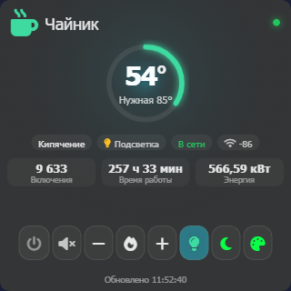

Электрочайник

Температура воды, нужная температура, режимы, питание и подсветка в одной карточке.
Как работает
Виджет читает свойства, заданные в настройках. Кольцо показывает текущую температуру между минимумом и максимумом; рядом выводится нужная температура. Кнопки − и + меняют нужную температуру с заданным шагом: короткое нажатие — один шаг, при удержании значение продолжает меняться всё быстрее, отпускание останавливает (как кнопки на пульте). Прошивка RK-M139S отдаёт heat_temp = 0, когда чайник выключен, кипит или работает ночник, — виджет в этом случае показывает последнюю выбранную температуру (по умолчанию 85°) и берёт её за основу при нажатии −/+. Кнопка питания включает чайник в выбранном режиме и выключает командой off: включённый чайник — зелёная кнопка, выключенный — серая. Кнопка режима перебирает только три режима (без «Выкл») и после последнего возвращается к первому; на кнопке показан только значок текущего режима, а его название выводится в строке статусов. Пока чайник выключен, выбор режима только запоминается и применяется при включении. Подсветка и ночник — две отдельные кнопки, у каждой свои состояния «вкл» и «выкл»; вместе с кнопками звука и цвета (палитры) они находятся в той же строке, что и остальные кнопки. Если индикатор шлюза в правом верхнем углу красный, все кнопки виджета неактивны.
Статистика (включая текущую мощность в кВт) показывается только для заполненных свойств: если поле не задано или данных нет, ячейка скрывается, а оставшиеся ячейки центрируются в строке. Все объекты и свойства выбираются из списков в редакторе. Свойство доступно только после выбора объекта; объект можно заменить на любой другой, и список свойств сразу обновится. Новый виджет создаётся с пустыми полями: объекты, свойства и диапазон температуры задаёт пользователь. Включение и выключение распознаются автоматически: on, 1, true, «вкл» — включено; off, 0, false, «выкл» — выключено.
Когда включена подсветка (не ночник), цвет кольца меняется с температурой воды — от синего к красному у кипения, как на чайнике. В остальных режимах цвет кольца берётся из свойства RGB (HEX 0ad6ff или тройка шлюза 255,255,255); если оно не задано, используется цвет из «Дополнительно». Кнопка с палитрой (и плашка состояния света) открывает окно смены цвета ночника: выбранный цвет сохраняется в свойство RGB тройкой r,g,b и сразу применяется шлюзом, если ночник включён. Время последнего обновления показывается внизу, если включён чекбокс «Показывать время обновления».
Для шлюза ESP32-R4sGate режимы задаются командами топика heat в порядке: boil|kett_boil,heat|kett_heat,auto|kett_boil_heat. Питание берётся из того же свойства: off означает выключено. «Кипячение + подогрев» (auto) сначала кипятит до 100°, потом держит заданную температуру. Если нужная температура больше 0, шлюз будет держать её и после команды «Кипятить» — так устроена прошивка. Виджет не меняет нужную температуру при переключении режимов. Подсветка (топик backlight) и ночник (топик nightlight) включаются и выключаются независимо своими кнопками; в строке статусов рядом с режимом показывается «Подсветка», «Ночник», «Подсветка + ночник» или «Выкл». Кнопка звука в цикл режимов не входит. Кружок в правом верхнем углу появляется, когда заполнено «Свойство статуса». Его цвет берётся из «Свойства шлюза» (GatewayStatus, топик r4s0/c18698fa5e4b/gatewaystatus), а если пара «шлюза» не задана — из Status: зелёный при online/1/true/on, красный при offline/0/false/off. Текст «В сети / Не в сети» в плашке берётся только из «Свойства статуса» (Status, топик r4s0/c18698fa5e4b/status): online, true, 1 → «В сети», offline, false, 0 → «Не в сети», остальные значения показываются как есть. Если свойство статуса не заполнено, плашка не выводится. Статус чайника может кратковременно уходить в offline при BLE-разрыве.
Форматы полей
| Поле | Формат | Пример |
|---|---|---|
modes | значение|подпись, через запятую; запись с off игнорируется | boil|kett_boil,heat|kett_heat,auto|kett_boil_heat |
property_rgb | HEX-цвет или r,g,b | 0ad6ff, 255,255,255 |
property_status, property_gateway | online/offline, либо 1/0, true/false, on/off | online |
Подпись вида kett_* переводится через языковой файл; любой другой текст показывается как есть.
Все поля
Основное params
| Поле | Ключ | По умолчанию |
|---|---|---|
| Название | title | — |
| Тип иконки / иконка / URL | icon_type, icon, icon_url | icon, fas fa-mug-hot |
| Объект и свойство температуры | object, property | не задано |
| Объект и свойство нужной температуры | object_target, property_target | не задано |
| Объект и свойство режима | object_mode, property_mode | не задано |
| Режимы | modes | не задано |
| Объект и свойство статуса (плашка «В сети») | object_status, property_status | не задано |
| Объект и свойство шлюза (цвет кружка в углу) | object_gateway, property_gateway | не задано |
| Объект и свойство ночника | object_light, property_light | не задано |
| Объект и свойство подсветки | object_backlight, property_backlight | не задано |
| Объект и свойство звука | object_beep, property_beep | не задано |
| Объект и свойство цвета | object_rgb, property_rgb | не задано |
| Объект и свойство сигнала | object_rssi, property_rssi | не задано |
| Объект и свойство счётчика включений | object_count, property_count | не задано |
| Объект и свойство времени работы | object_worktime, property_worktime | не задано |
| Объект и свойство энергии | object_energy, property_energy | не задано |
| Объект и свойство текущей мощности (кВт) | object_power_kw, property_power_kw | не задано |
| Объект и свойство объёма воды | object_volume, property_volume | не задано |
| Объект и свойство последнего объёма | object_volume_last, property_volume_last | не задано |
| Минимум / максимум / шаг | temp_min, temp_max, temp_step | не задано |
Дополнительно advanced
Период обновления, фон, цвет и чекбокс «Показывать время обновления» — общие для всех виджетов поля.